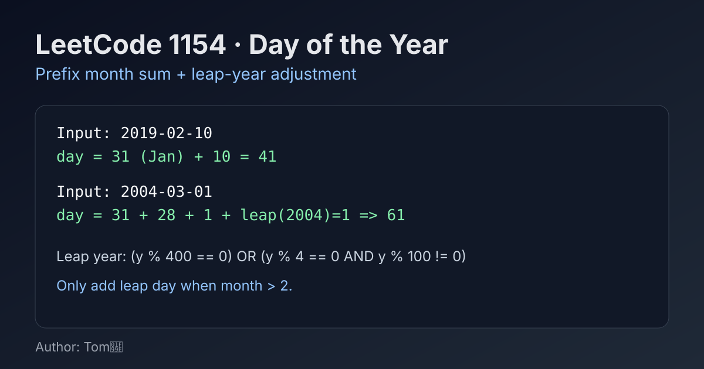

LeetCode 1154: Day of the Year (Prefix Month Sum + Leap Year Check)
LeetCode 1154DateSimulationToday we solve LeetCode 1154 - Day of the Year.
Source: https://leetcode.com/problems/day-of-the-year/

English
Problem Summary
Given a date string in format YYYY-MM-DD, return which day number it is in that year (starting from 1).
Key Insight
Parse year, month, and day. Sum all days in months before month, then add day. If the year is leap and month is after February, add 1 extra day.
Algorithm
- Parse y, m, d from the string.
- Use month-day table for a normal year.
- Accumulate days of months 1..m-1.
- Add d.
- If leap year and m > 2, add 1.
Complexity Analysis
Time: O(12) (constant).
Space: O(1).
Common Pitfalls
- Wrong leap year rule (century years are not leap unless divisible by 400).
- Adding leap day when month is January/February.
- Parsing slices with wrong indices.
Reference Implementations (Java / Go / C++ / Python / JavaScript)
class Solution {
public int dayOfYear(String date) {
int y = Integer.parseInt(date.substring(0, 4));
int m = Integer.parseInt(date.substring(5, 7));
int d = Integer.parseInt(date.substring(8, 10));
int[] days = {31,28,31,30,31,30,31,31,30,31,30,31};
int ans = d;
for (int i = 0; i < m - 1; i++) {
ans += days[i];
}
if (m > 2 && isLeap(y)) ans++;
return ans;
}
private boolean isLeap(int y) {
return (y % 400 == 0) || (y % 4 == 0 && y % 100 != 0);
}
}func dayOfYear(date string) int {
y, _ := strconv.Atoi(date[0:4])
m, _ := strconv.Atoi(date[5:7])
d, _ := strconv.Atoi(date[8:10])
days := []int{31, 28, 31, 30, 31, 30, 31, 31, 30, 31, 30, 31}
ans := d
for i := 0; i < m-1; i++ {
ans += days[i]
}
if m > 2 && (y%400 == 0 || (y%4 == 0 && y%100 != 0)) {
ans++
}
return ans
}class Solution {
public:
int dayOfYear(string date) {
int y = stoi(date.substr(0, 4));
int m = stoi(date.substr(5, 2));
int d = stoi(date.substr(8, 2));
vector<int> days = {31,28,31,30,31,30,31,31,30,31,30,31};
int ans = d;
for (int i = 0; i < m - 1; ++i) ans += days[i];
if (m > 2 && (y % 400 == 0 || (y % 4 == 0 && y % 100 != 0))) ans++;
return ans;
}
};class Solution:
def dayOfYear(self, date: str) -> int:
y = int(date[0:4])
m = int(date[5:7])
d = int(date[8:10])
days = [31, 28, 31, 30, 31, 30, 31, 31, 30, 31, 30, 31]
ans = d + sum(days[:m - 1])
if m > 2 and (y % 400 == 0 or (y % 4 == 0 and y % 100 != 0)):
ans += 1
return ansvar dayOfYear = function(date) {
const y = Number(date.slice(0, 4));
const m = Number(date.slice(5, 7));
const d = Number(date.slice(8, 10));
const days = [31, 28, 31, 30, 31, 30, 31, 31, 30, 31, 30, 31];
let ans = d;
for (let i = 0; i < m - 1; i++) {
ans += days[i];
}
if (m > 2 && (y % 400 === 0 || (y % 4 === 0 && y % 100 !== 0))) {
ans += 1;
}
return ans;
};中文
题目概述
给定格式为 YYYY-MM-DD 的日期字符串，返回该日期是这一年的第几天（从 1 开始计数）。
核心思路
先解析出 year、month、day。把当前月份之前所有月份天数累加，再加上当月天数 day。若是闰年且月份超过 2 月，再额外加 1 天。
算法步骤
- 从字符串切片得到 y, m, d。
- 准备平年每月天数数组。
- 累加 1..m-1 月份天数。
- 加上 d。
- 若闰年且 m > 2，再加 1。
复杂度分析
时间复杂度：O(12)（常数级）。
空间复杂度：O(1)。
常见陷阱
- 闰年判断写错：整百年必须能被 400 整除才是闰年。
- 在 1 月或 2 月错误地加了闰日。
- 字符串切片下标写错导致解析错误。
多语言参考实现（Java / Go / C++ / Python / JavaScript）
class Solution {
public int dayOfYear(String date) {
int y = Integer.parseInt(date.substring(0, 4));
int m = Integer.parseInt(date.substring(5, 7));
int d = Integer.parseInt(date.substring(8, 10));
int[] days = {31,28,31,30,31,30,31,31,30,31,30,31};
int ans = d;
for (int i = 0; i < m - 1; i++) {
ans += days[i];
}
if (m > 2 && isLeap(y)) ans++;
return ans;
}
private boolean isLeap(int y) {
return (y % 400 == 0) || (y % 4 == 0 && y % 100 != 0);
}
}func dayOfYear(date string) int {
y, _ := strconv.Atoi(date[0:4])
m, _ := strconv.Atoi(date[5:7])
d, _ := strconv.Atoi(date[8:10])
days := []int{31, 28, 31, 30, 31, 30, 31, 31, 30, 31, 30, 31}
ans := d
for i := 0; i < m-1; i++ {
ans += days[i]
}
if m > 2 && (y%400 == 0 || (y%4 == 0 && y%100 != 0)) {
ans++
}
return ans
}class Solution {
public:
int dayOfYear(string date) {
int y = stoi(date.substr(0, 4));
int m = stoi(date.substr(5, 2));
int d = stoi(date.substr(8, 2));
vector<int> days = {31,28,31,30,31,30,31,31,30,31,30,31};
int ans = d;
for (int i = 0; i < m - 1; ++i) ans += days[i];
if (m > 2 && (y % 400 == 0 || (y % 4 == 0 && y % 100 != 0))) ans++;
return ans;
}
};class Solution:
def dayOfYear(self, date: str) -> int:
y = int(date[0:4])
m = int(date[5:7])
d = int(date[8:10])
days = [31, 28, 31, 30, 31, 30, 31, 31, 30, 31, 30, 31]
ans = d + sum(days[:m - 1])
if m > 2 and (y % 400 == 0 or (y % 4 == 0 and y % 100 != 0)):
ans += 1
return ansvar dayOfYear = function(date) {
const y = Number(date.slice(0, 4));
const m = Number(date.slice(5, 7));
const d = Number(date.slice(8, 10));
const days = [31, 28, 31, 30, 31, 30, 31, 31, 30, 31, 30, 31];
let ans = d;
for (let i = 0; i < m - 1; i++) {
ans += days[i];
}
if (m > 2 && (y % 400 === 0 || (y % 4 === 0 && y % 100 !== 0))) {
ans += 1;
}
return ans;
};
Comments